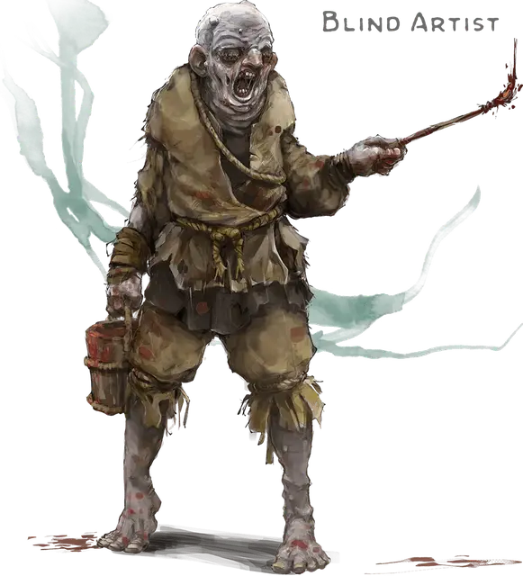

Слепой художник
Blind Artist
Средняя Нежить, нейтрально-злая

Класс Доспеха 8
Хиты 22 (3к8 + 9)
Скорость 20 футов
| мод | спас | ||
|---|---|---|---|
| СИЛ | 13 | +1 | +1 |
| ЛОВ | 6 | −2 | −2 |
| ТЕЛ | 16 | +3 | +3 |
| мод | спас | ||
|---|---|---|---|
| ИНТ | 3 | −4 | −4 |
| МДР | 6 | −2 | +0 |
| ХАР | 5 | −3 | −3 |
Иммунитет к урону яд
Иммунитет к состояниям ослепление, отравление
Чувства слепое зрение 30 футов (слеп за его пределами), пассивное Восприятие 8
Опасность 0
Бонус мастерства +2
Особенности
Языки. Понимает языки, которые знал при жизни, но не может говорить.
Стойкость нежити. Если зомби получает урон, уменьшающий хиты до 0, он совершает спасбросок Телосложения Сл 5 + полученный урон, если только это не был урон излучением или урон от критического попадания. При успехе хиты зомби опускаются всего лишь до 1.
Природа нежити. Зомби не нужен воздух, еда, питье и сон.